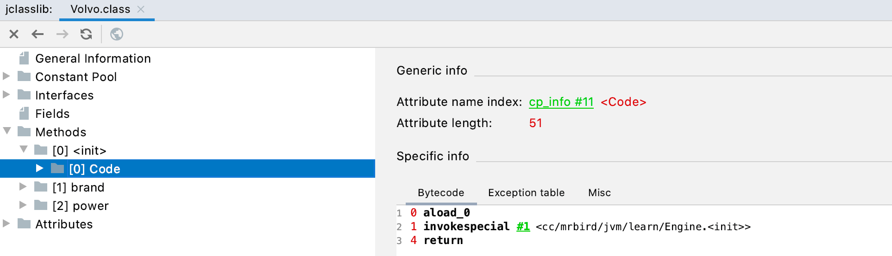
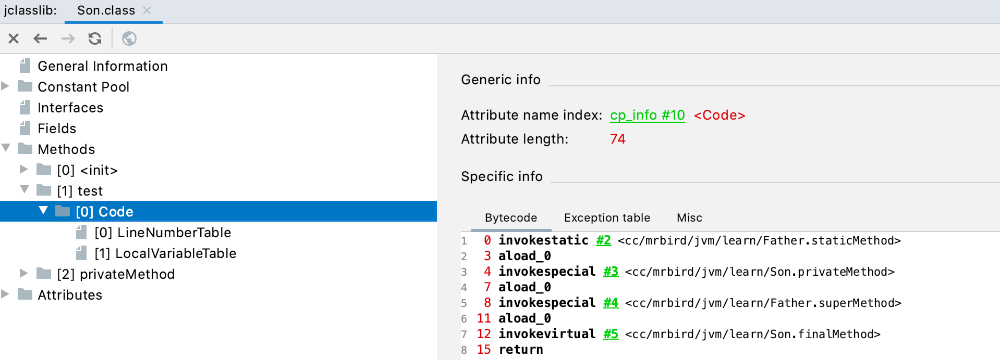
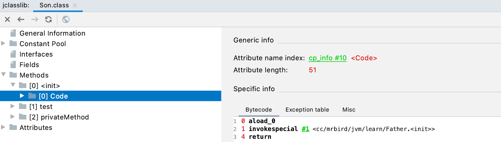
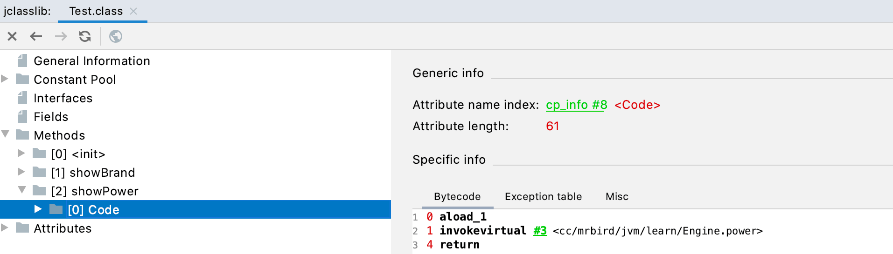
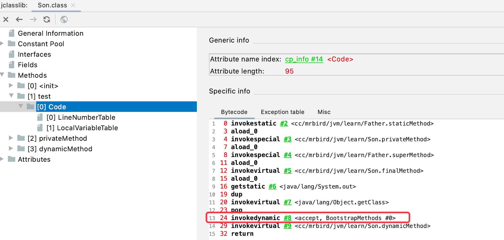

JVM中，类加载过程链接阶段的解析步骤包含将符号引用转换为调用方法的直接引用过程，该过程与方法的绑定机制有关，这节记录下Java方法调用的一些细节。
方法绑定机制
在聊方法绑定机制之前，我们需要先知道什么是静态链接和动态链接。
静态链接：类加载过程中，如果被调用的目标方法在编译期就可以唯一确定，运行期间不会发生改变，这种情况下将调用方法的符号引用转换为直接引用的过程称之为静态链接。
动态链接：和静态链接相反，如果被调用的目标方法在编译期无法确定下来，只能够在运行期间将调用方法的符号引用转换为直接引用，这种情况被称为动态链接。
静态链接和动态链接对应的方法绑定机制分别为早期绑定和晚期绑定。绑定是一个字段、方法或者类在符号引用被替换为直接引用的过程，仅仅发生一次。
举个例子，新建TEST类：
1 | public class Test { |
上面代码中，包含一个Car接口和Engine类；Volvo类和Benz类分别都继承了Engine类实现了Car接口，然后都重写了Car接口的brand方法和Engine父类的power方法。Test类的showBrand方法参数为Car接口，showPower方法的参数为Engine类，因为它们在编译期都无法确定参数具体是哪一个类，所以都为晚期绑定。
改造Volvo类：
1 | class Volvo extends Engine implements Car { |
我们在Volvo类中添加了一个空参构造器，并调用了父类的空参构造器，因为父类空参构造器可以唯一确定下来就是Engine的空参构造器，在编译期就可以唯一确定，所以这种称为早期绑定。
tips：构造方法可以看成是一种特殊的方法，通过jclasslib插件也可以看到，类的构造器也划分在Methods列表中：

虚方法和非虚方法
非虚方法：方法在编译期就确定了具体的调用版本，这个版本在运行时是不可变的，这样的方法称为非虚方法。静态方法、私有方法、final方法、实例构造器和父类方法都是非虚方法，其余的方法都称为虚方法；
虚方法：和非虚方法相反。
方法调用虚拟机指令
虚拟机中提供了以下几条方法调用指令：
- invokestatic：调用静态方法；
- invokespecial：调用
方法（构造器）、私有方法及父类方法； - invokevirtual：调用所有虚方法和final修饰的方法；
- invokeinterface：调用接口方法。
Java7后，虚拟机又新增了一个动态调用指令：
- invokedynamic：动态解析处需要调用的方法，然后执行（实际应用体现在Java8的lambda表达式）。
举个例子：
1 | public class Father { |
通过jclasslib查看Son类test方法字节码：

Son类的无参构造器字节码：

前面例子中test类的showBrand方法字节码：

前面例子中test类的showPower方法字节码：

invokedynamic指令lambda表达式例子（修改Son类，添加dynamicMethod）：
1 | class Son extends Father { |
查看其test方法字节码：

方法重写本质
Java方法在被调用时遵循以下几个步骤：
- 找到操作数栈顶的第一个元素所执行的对象的实际类型，记作C；
- 如果在类型C中找到与常量中的描述相符合的方法，则进行访问权限校验，如果校验通过则返回这个方法的直接引用，查找过程结束；如果不通过，则返回java.lang.IllegalAccessError异常；
- 否则，按照继承关系从下往上依次对C的各个父类进行第2步的搜索和验证过程；
- 如果始终没找到合适的方法，则抛出java.lang.AbstractMethodError异常。
如果方法调用每次都需要按照上面四个步骤搜索的话，势必会消耗一定的性能。所以为了提高性能，JVM采用在类的方法区建立一个虚方法表来实现（非虚方法可以唯一确定，不需要查找，所以没有非虚方法表），使用索引表来代替查找。虚方法表在类加载的链接阶段（解析阶段）被创建。